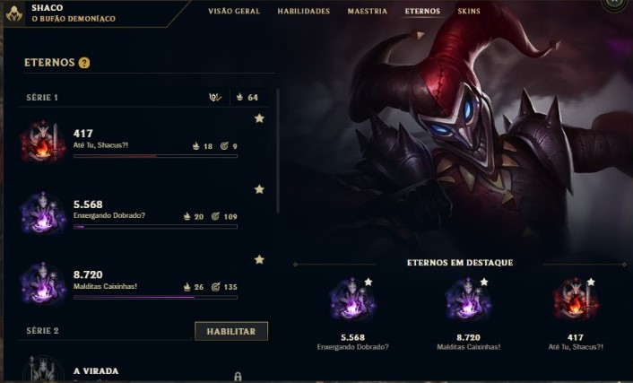
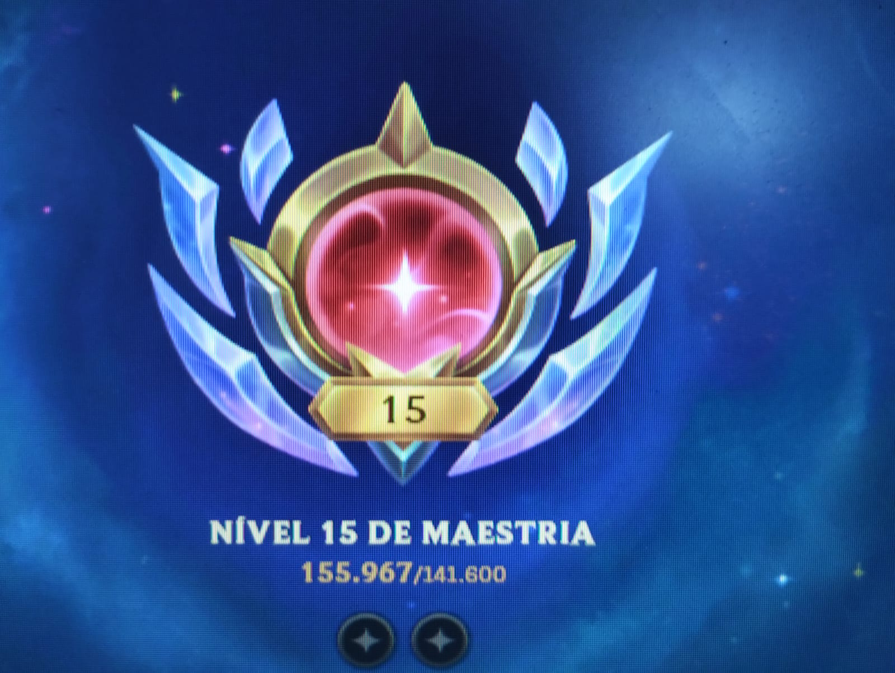
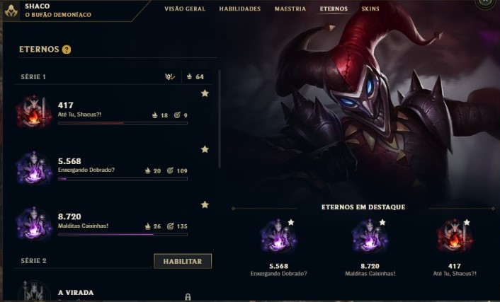
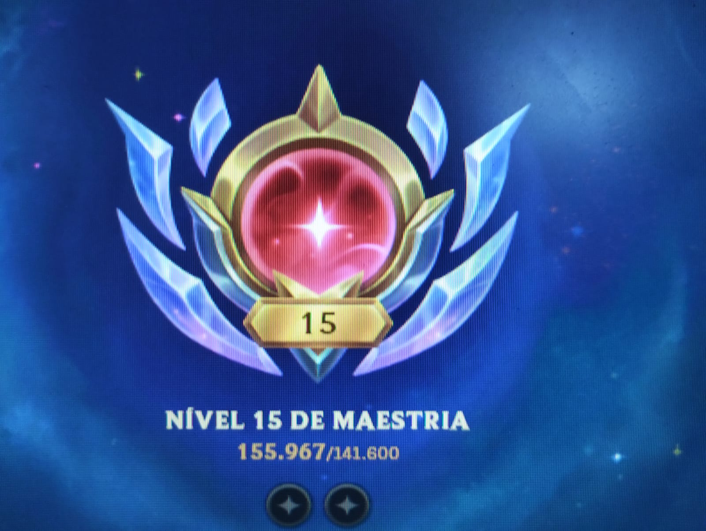

um humilde usuário de programa e criador de conteúdo de *originalidade duvidosa*
18 anos, no terceiro período de ADS
Minha ideia inicial era ser youtuber de Minecraft, depois médico, depois coveiro, depois bicheiro,
depois ferreiro, depois caminhoneiro. Acabei cursando ADS, mas acho que vou virar palhaço de rodeio.
poisé um programador que tem o sonho de ser dublador e perde tempo editando fotos e videos... da pra acreditar nisso?
uma curiosidade, na novela caras e bocas o macaco chico comeu um panelaço de strogonoff sem fazer cara feia e no fim da gravação desceu a porrada no diretor Jorge Fernando
 


